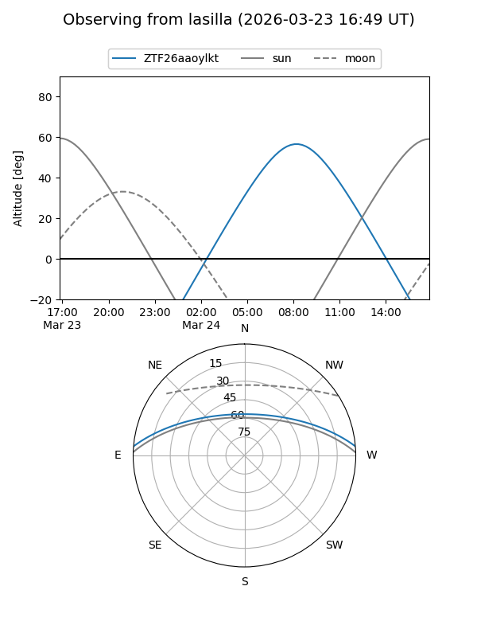
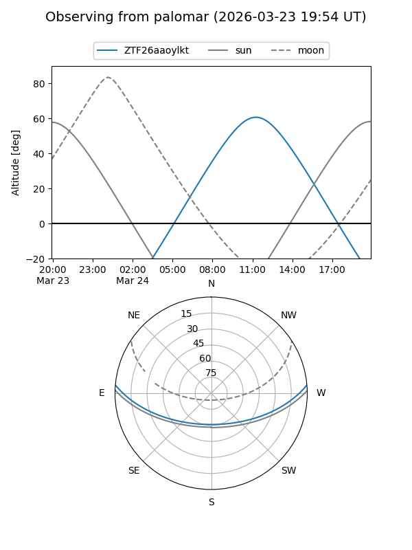

ZTF26aaoylkt
Target ZTF26aaoylkt at 2026-03-23 12:54
Aliases and brokers:
FINK: link
Lasair: link
ALeRCE: link
alt names
ZTF26aaoylkt (ztf,fink_ztf)
Coordinates:
equatorial (ra, dec) = 233.7447,+4.19156
equatorial (HMS+DMS) = 15:34:58.74,+04:11:29.61
galactic (l, b) = (9.8081,+44.77941)
Flags:
Photometry:
last ztfg=17.80
1 ztfg detections
Lightcurve
Visibility


Additional plots